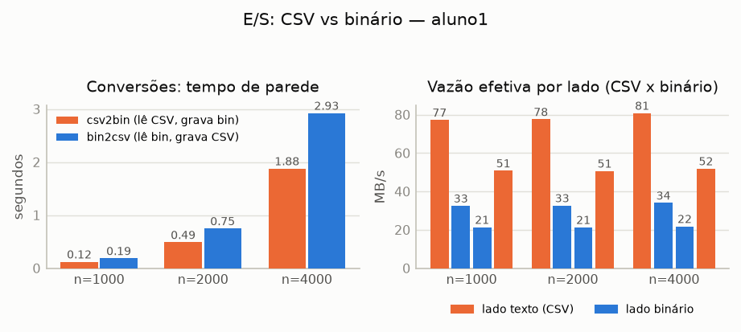
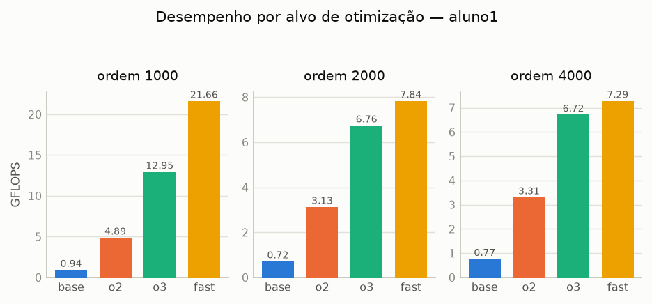
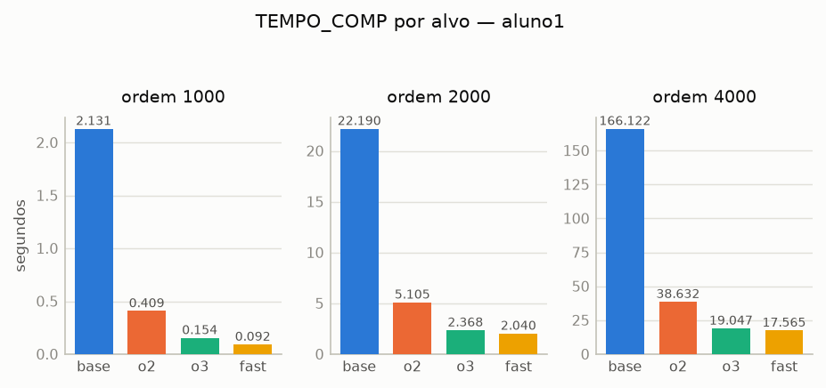
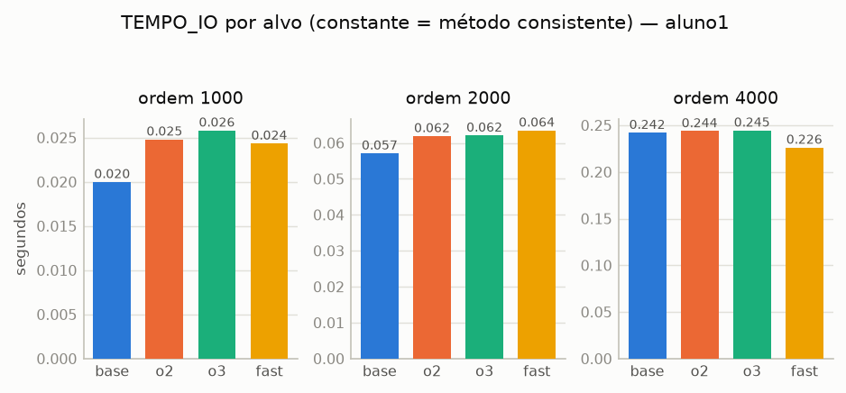

Trabalho prático — multiplicação de matrizes densas em float sob quatro níveis de otimização do GCC,
com caracterização experimental da máquina e dissecação do código de máquina gerado.
| Integrante: aluno1 (grupo de 1 integrante) | Data: 02/10/2026 |
| CPU: Intel Core i5-10210U (Comet Lake-U, AVX2 + FMA) | Compilador: GCC 16.2.1 (Red Hat) |
| Sistema: Fedora 44, kernel 6.19.10, ext. de arquivos btrfs | Artefatos: maquinas/aluno1/ |
O trabalho implementa, em C11 estrito, um pipeline completo de multiplicação de matrizes densas
C = A×B em precisão simples: dois utilitários de conversão entre os formatos texto (CSV) e binário
proprietário, o motor de multiplicação com métricas padronizadas de tempo e vazão, e quatro binários do mesmo
código-fonte compilados sob níveis crescentes de otimização. O objetivo experimental é quantificar,
nesta máquina, o efeito de três alavancas independentes:
%.6f contra o bloco binário contíguo;-O0 para -O2/-O3 (registradores, inlining, vetorização automática);-march=native -ffast-math -funroll-loops sobre AVX2+FMA, incluindo o impacto da hierarquia de cache.
O pacote de entrega segue a estrutura do enunciado: src/ (fontes e módulos), Makefile,
scripts/ (geração de dados, benchmark e coleta), maquinas/aluno1/ (specs, desmontagens,
binários e benchmark_aluno1.csv), figuras/ e tabelas/ (insumos deste relatório).
Cada matriz é um buffer único de m×n float em ordem row-major, encapsulado numa
struct com dimensões — exatamente o layout do payload binário, o que permite ler e gravar o payload com
uma única chamada de E/S, sem cópia. Os buffers são alocados com
posix_memalign(&p, 64, ...): 64 bytes cobrem a linha de cache x86-64, o registro AVX2 (32 B)
e permitiriam registros AVX-512 (64 B) em máquinas que os tenham. Dentro do kernel, o compilador recebe a
garantia de alinhamento via __builtin_assume_aligned, e os ponteiros locais são anotados
restrict — o contrato de não sobreposição entre A, B e C é o que autoriza o vetorizador a tratar
as cargas e escritas como independentes.
O laço mais interno percorre as colunas de uma linha inteira de C e da linha correspondente de
B, com passo 1. Três propriedades justificam essa ordem:
C[i][j] acumula produtos distintos e independentes. Diferentemente da ordem
i→j→k (produto interno, que só vetoriza com reassociação e portanto exige
-ffast-math), o alvo -O3 puro já vetoriza o laço
i→k→j, como a seção 6 confirma empiricamente;aik sai da memória uma vez por par (i, k) e alimenta
N multiplicações a partir de um registrador (no alvo fast, difundido para todas as
lanes vetoriais);B e C são varridas com passo 1 (linhas contíguas, sem
penalidade de stride), e a linha de C em construção — 16 KiB para N = 4000 —
permanece quente na L1d (32 KiB) ao longo de todo o laço k.
Como N é dinâmico, o GCC não consegue provar que o início de cada linha C[i]
(c + i·N) está alinhado, e por padrão emitiria apenas cargas/escritas não alinhadas. Para
obter instruções alinhadas sem abrir mão da correção para qualquer N (inclusive ímpar), o laço interno abre
um prólogo que avança ci até a fronteira de 32 bytes e marca o restante do corpo com
__builtin_assume_aligned(..., 32):
/* prólogo: quantos floats faltam para a próxima fronteira de 32 bytes */ const size_t prologo = (size_t)((32u - ((uintptr_t)ci & 31u)) & 31u) / sizeof(float); size_t j = 0; for (; j < prologo && j < N; j++) ci[j] += aik * bk[j]; float *restrict cj = __builtin_assume_aligned(ci + j, 32); /* provado alinhado */ const float *restrict bj = bk + j; for (uint64_t r = 0; j + r < N; r++) cj[r] += aik * bj[r];
O resultado é exatamente o esperado: no alvo fast o compilador emite vmovaps
(escrita alinhada) para C, mantendo vmovups para B — que continua sem
garantia de alinhamento para N arbitrário. Essa assimetria é segura e barata: em microarquiteturas modernas
cargas não alinhadas que não cruzam linhas de cache têm o mesmo custo das alinhadas.
O utilitário csv2bin aloca um buffer único de 16 + M·N·4 bytes, grava o
cabeçalho nos primeiros 16 e preenche o payload a partir do deslocamento 16 — a gravação em disco é então
uma única fwrite, sem cópias intermediárias, como pede o enunciado. No matmul, a
escrita de C usa duas fwrite (cabeçalho e payload): forçar uma única chamada exigiria
ou desalinhar o payload (offset 16 não é múltiplo de 32) ou pagar um memcpy de até 64 MB dentro do
TEMPO_IO — ambos piores que a segunda chamada, que o stdio já amortiza no próprio buffer.
A leitura valida o cabeçalho e compara o tamanho real do arquivo (fstat) com
16 + M·N·4 antes de alocar, rejeitando arquivos truncados ou com dimensões
absurdas. Dimensões incompatíveis no matmul (A.n ≠ B.m) produzem mensagem em
stderr e código de saída 1, sem nada em stdout; a linha padronizada de métricas sai
sempre sozinha, formatada com 6 casas para tempos e 4 para GFLOPS.
-ffp-contract
Os quatro alvos exigidos usam as flags literais do enunciado, mais um conjunto comum:
-std=c11 -D_POSIX_C_SOURCE=200809L -Wall -Wextra -Wpedantic. Um ponto mereceu atenção
experimental: em modo ISO C11 o GCC desliga por padrão a contratação de FMA
(-ffp-contract=off) — sem intervenção, até o alvo fast emitiria pares
vmulps+vaddps em vez de vfmadd*ps, contrariando a análise de código de
máquina esperada. Por isso -ffp-contract=fast integra o conjunto comum dos quatro alvos; o
contraste com -ffp-contract=off fica documentado no README como experimento
complementar. O binário matmul_fast só roda na máquina em que foi compilado
(-march=native) e é por isso arquivado em maquinas/aluno1/bin/ para rastreabilidade.
O cronômetro é clock_gettime(CLOCK_MONOTONIC) (resolução de nanossegundos, imune a ajustes de
relógio). Duas métricas são reportadas: TEMPO_IO (leitura de A, leitura de B e escrita de C, incluindo
abertura/fechamento; alocação excluída) e TEMPO_COMP (intervalo estrito do laço computacional),
com GFLOPS = 2·M·K·N / (TEMPO_COMP·109). O protocolo do
benchmark busca controlar as principais fontes de ruído de uma CPU móvel de 15 W:
taskset -c 2 e governor performance (ativo na máquina);sync antes de cada medição (fora do intervalo cronometrado): a primeira rodada
mostrou que commits de transação e o writeback do btrfs caíam dentro do TEMPO_IO e
dominavam a variância; com o sync, a dispersão do TEMPO_IO entre alvos nas
ordens 2000/4000 caiu para 1,04–1,42×.Limitações assumidas: as leituras medem o caminho quente (page cache — 630 MB de dados em 7,6 GiB de RAM), que é a definição convencional de tempo de carga/escrita e a mais comparável; e a máquina é única (grupo de 1 integrante), de modo que a análise multi-hardware do enunciado reduz-se à caracterização desta CPU e à extrapolação dos efeitos de AVX2/FMA e da hierarquia de cache.
| Item | Valor | Item | Valor |
|---|---|---|---|
| Processador | Intel Core i5-10210U | L1d / L1i | 32 KiB / 32 KiB por núcleo |
| Microarquitetura | Comet Lake-U (10ª geração) | L2 | 256 KiB por núcleo (1 MiB total) |
| Núcleos / threads | 4 / 8, 1 socket | L3 | 6 MiB compartilhado |
| Frequência base / máx. | 1,60 GHz / 4,20 GHz | Extensões | SSE4.2, AVX2, FMA (sem AVX-512) |
| Memória | 7,6 GiB (4,7 GiB livres na coleta) | Compilador | GCC 16.2.1, -march=native → skylake |
A Tabela 2 consolida as conversões (medianas) e a Figura 1 mostra os tempos e a vazão efetiva por lado. O
CSV ocupa 2,375× o tamanho do binário na ordem 4000 (152,0 MB contra 64,0 MB), mas a diferença de tempo
é maior que a de bytes — e no sentido menos óbvio: csv2bin (lê 152 MB de texto, grava
64 MB) é mais rápido que bin2csv (lê 64 MB, grava 152 MB de texto). A explicação é o custo
de serialização: strtof na entrada contra snprintf("%.6f") na saída. A formatação
decimal, que exige arredondamento e conversão binário→decimal por valor, é o gargalo dominante — não os
bytes trafegados.
| Ordem | Operação | Tempo (s) | Entrada (MB) | Saída (MB) | Vazão total (MB/s) |
|---|---|---|---|---|---|
| 1000² | csv2bin | 0,123 | 9,50 | 4,00 | 109,8 |
| bin2csv | 0,187 | 4,00 | 9,50 | 72,3 | |
| 2000² | csv2bin | 0,490 | 38,0 | 16,0 | 110,3 |
| bin2csv | 0,749 | 16,0 | 38,0 | 72,1 | |
| 4000² | csv2bin | 1,880 | 152,0 | 64,0 | 114,9 |
| bin2csv | 2,926 | 64,0 | 152,0 | 73,8 |

Para o pipeline de multiplicação, o impacto prático é direto: com o formato binário, o TEMPO_IO
medido pelo matmul na ordem 4000 (ler A + ler B + gravar C) fica em torno de 0,24 s para
192 MB movimentados; converter os mesmos dados de/para CSV custaria 1,9–2,9 s por arquivo — uma ordem de
grandeza a mais. O binário é, portanto, o formato correto para o caminho quente, com o CSV reservado à
interoperabilidade e à auditoria.
| Ordem | Métrica | base (–O0) | o2 (–O2) | o3 (–O3) | fast (–march=native) |
|---|---|---|---|---|---|
| 1000² | TEMPO_COMP (s) | 2,131 | 0,409 | 0,154 | 0,092 |
| GFLOPS | 0,94 | 4,89 | 12,95 | 21,66 | |
| speedup | 1,0× | 5,2× | 13,8× | 23,1× | |
| 2000² | TEMPO_COMP (s) | 22,190 | 5,105 | 2,368 | 2,040 |
| GFLOPS | 0,72 | 3,13 | 6,76 | 7,84 | |
| speedup | 1,0× | 4,3× | 9,4× | 10,9× | |
| 4000² | TEMPO_COMP (s) | 166,122 | 38,632 | 19,047 | 17,565 |
| GFLOPS | 0,77 | 3,31 | 6,72 | 7,29 | |
| speedup | 1,0× | 4,3× | 8,7× | 9,5× |


base leva
166 s contra 17,6 s do fast — quase três minutos contra dezoito segundos.
(a) Otimização escalar (base → o2, ~4,3–5,2×). É o efeito clássico de tirar as variáveis da
pilha: em -O0 cada acesso a aik, j e aos ponteiros é uma recarga da
memória (seção 6), e o laço consome 4–5 instruções de “contabilidade” por operação aritmética. Em
-O2, domínio de registradores e inlining eliminam quase toda essa sobrecarga, mas o
código permanece escalar (mulss/addss) — o salto de vazão vem de menos
instruções por FLOP, não de paralelismo de dados.
(b) Vetorização SSE2 (o2 → o3, ~2,0–2,6×). O -O3 ativa o
tree-vectorizer, que processa 4 floats por instrução mulps/addps (SSE2,
128 bits) — a largura máxima garantida pela base x86-64, já que não há -march. O ganho de
~2,3× contra -O2 é consistente com a largura dobrada do vetor somada à redução do custo de
laço (desenrolamento implícito).
(c) AVX2 + FMA e o limite de memória (o3 → fast: 1,67× em 1000², 1,16× em 2000²,
1,08× em 4000²). A ordem 1000 é o regime que favorece o hardware nativo: o conjunto de
trabalho (A + B + C = 12 MB) cabe majoritariamente no L3 de 6 MiB (a matriz B, de 4 MB, fica residente), e o
fast troca 4 floats/instrução por 8 (AVX2, 256 bits) e funde multiplicação e soma numa só
vfmadd*ps — atingindo 21,7 GFLOPS (23,1× o base). Nas ordens 2000 e 4000, porém, o
problema muda de regime: as matrizes somam 48 MB e 192 MB, contra 6 MiB de L3, e o tráfego dominante passa a
ser a releitura de B a cada linha de A (M × K × N × 4 B
≈ 256 GB por execução na ordem 4000). Com ~7,3 GFLOPS a 6 B/FLOP no caminho memória–registrador
(2 leituras + 1 escrita), o kernel exige ≈ 15–30 GB/s efetivos — na fronteira da banda DDR4 da máquina.
Resultado: SSE2 (o3) já satura o subsistema de memória e o AVX2/FMA quase não agrega
(1,08×). A Figura 4 evidencia a consequência prática dessa análise.

Determinismo. Os alvos base, o2 e o3 produzem resultados
bit-idênticos nas três ordens (verificação exaustiva com scripts/comparar_saidas.py):
a vetorização do laço interno não reassocia a acumulação em k, apenas paraleliza elementos
independentes em j — exatamente o que a escolha da ordem i→k→j garante.
Fast-math. O alvo fast difere do base em no máximo
5,3·10-5 absoluto na ordem 4000 (valores típicos de magnitude ~14, ou seja,
≈4·10-6 relativo ao valor típico) — assinatura esperada de FMA (arredondamento único)
e de reassociação parcial na cadeia de acumulação. Desvios relativos grandes (> 1%) ocorrem apenas em
elementos cujo resultado verdadeiro é próximo de zero, onde a razão entre erro absoluto e magnitude explode;
a tolerância relevante para K = 4000 é absoluta (erro da ordem de K·ε·|termo|), não
puramente relativa.
sync
Como esperado numa CPU de 15 W, as repetições individuais oscilam: no alvo fast em 1000²,
por exemplo, observam-se 20,6–24,7 GFLOPS entre repetições (≈18% de dispersão), efeito de turbo e da
temperatura acumulada. As medianas e o intercalamento reduzem o risco de viés sistemático, mas o relatório
registra a dispersão como incerteza de medição. A variância do TEMPO_IO mereceu tratamento à
parte: a primeira rodada apresentou dispersão de até 5,5× entre alvos na mesma ordem, causada por
commits do btrfs e throttling de páginas sujas incidindo sobre as escritas; com sync
antes de cada medição, a dispersão caiu para 1,04–1,42× nas ordens maiores (Figura 4).
Os trechos abaixo foram extraídos das desmontagens em maquinas/aluno1/asm/
(endereços e bytes omitidos para legibilidade). As contagens completas por arquivo, produzidas por
scripts/gerar_asm.sh, são: referências à pilha ([rbp-...]) 218 no
base contra 6 no fast; no fast, 20 vmovaps
e 18 vfmadd*ps, com zero mulps/addps remanescentes.
-O0: tudo na pilha, por construção
No binário sem otimização, cada variável mora na memória: os endereços de B, C e o
escalar aik são recarregados da pilha a cada iteração, e até o incremento de j é um
read-modify-write em memória:
; laço interno (prólogo do peeling) — matmul_base mov rax,QWORD PTR [rbp-0x18] ; j lea rdx,[rax*4+0x0] mov rax,QWORD PTR [rbp-0x70] ; endereço-base de B[k] add rax,rdx movss xmm0,DWORD PTR [rax] ; B[k][j] mulss xmm0,DWORD PTR [rbp-0x64] ; * aik — RECARREGADO DA PILHA toda iteração mov rax,QWORD PTR [rbp-0x18] lea rdx,[rax*4+0x0] mov rax,QWORD PTR [rbp-0x60] ; endereço-base de C[i] add rax,rdx addss xmm0,xmm1 ; + C[i][j] (mantido em xmm1 pelo prólogo) movss DWORD PTR [rax],xmm0 ; C[i][j] = resultado add QWORD PTR [rbp-0x18],0x1 ; j++ — na memória cmp rax,QWORD PTR [rbp-0x78] jae ...
São 4 instruções de aritmética de endereços e ~6 acessos à pilha para cada mulss+addss:
o gargalo é o próprio tráfego de pilha e o AGU, não a FPU. É o retrato didático do que a otimização
posterior remove.
-O3: vetorização SSE2 a 128 bits; corpo principal — matmul_o3 (SSE2, 4 floats/iteração) movups xmm0,XMMWORD PTR [r8+rax*1] ; B[k][j..j+3] mulps xmm0,xmm2 ; * aik (difundido em xmm2) addps xmm0,XMMWORD PTR [rdx+rax*1] ; + C[i][j..j+3] (operando direto da memória) movaps XMMWORD PTR [rdx+rax*1],xmm0 ; C = resultado — ALINHADO (movaps), graças ao peeling add rax,0x10 ; 16 bytes = 4 floats cmp rax,rdi jne ...
Três observações: (i) o vetorizador funcionou sem -ffast-math, confirmando a tese da
seção 2.2 de que a ordem i→k→j evita redução vetorial; (ii) a carga de C foi fundida
como operando de memória do addps; (iii) mesmo sem -march, a escrita alinhada
(movaps) apareceu porque o peeling garante a propriedade que o compilador pode provar
independentemente de N.
-march=native: AVX2 + FMA, com desenrolamento
No alvo nativo, o laço passa a processar 8 floats por instrução, o escalar aik é difundido numa
vez (ymm15/ymm2) e cada atualização de linha vira uma única FMA com o operando de
C lido direto da memória; o laço é desenrolado em blocos de quatro vetores (32 floats),
com acumuladores independentes (ymm3–ymm11) para quebrar a cadeia de dependência, e
epílogo com tabela de saltos para o resto:
; corpo principal — matmul_fast (AVX2 + FMA, 8 floats/instrução) vmovups ymm0,YMMWORD PTR [rcx] ; B[k][j..j+7] (carga não alinhada — B não tem garantia p/ N ímpar) vfmadd213ps ymm0,ymm2,YMMWORD PTR [rdx] ; ymm0 = aik*ymm0 + C[i][j..j+7] (C lido direto da memória) vmovaps YMMWORD PTR [rdx],ymm0 ; C[i][j..j+7] — escrita ALINHADA (vmovaps) add rax,0x20 ; 32 bytes = 8 floats vmovups ymm5,YMMWORD PTR [rcx+rax*1] vfmadd213ps ymm5,ymm15,YMMWORD PTR [rdx+rax*1] vmovaps YMMWORD PTR [rdx+rax*1],ymm5 ... cmp rdi,0x3 / 0x4 / 0x5 / 0x6 ; epílogo: tabela de saltos para 1..7 floats restantes je ...
mulss xmm0,DWORD PTR [rbp-0x64] addss xmm0,xmm1 movss DWORD PTR [rax],xmm0 add QWORD PTR [rbp-0x18],0x1
vmovups ymm0,[rcx] vfmadd213ps ymm0,ymm2,[rdx] vmovaps [rdx],ymm0 add rax,0x20
A comparação lado a lado resume a ação do otimizador nesta CPU: (1º) eliminação total do trânsito pela pilha
(218 → 6 referências); (2º) difusão do escalar e fusão carga×soma na FMA
(vfmadd213ps com operando de memória), reduzindo de duas para uma o arredondamento por MAC;
(3º) largura de 8 floats (YMM) e desenrolamento de 4 vetores; (4º) escritas alinhadas
(vmovaps) habilitadas pelo peeling explícito, com cargas não alinhadas (vmovups)
onde a garantia não existe — e sem penalidade prática na microarquitetura.
matmul_o3 (SSE2, sem -march) é portável,
ele serve de referência comum para eventuais comparações futuras;drop_caches privilegiado e tornaria as execuções não reprodutíveis em máquinas diferentes;taskset -c 2 foi escolhido
justamente para estabilizar a medição. OpenMP/Pthreads seria o eixo seguinte de estudo;perf (indisponível no ambiente).
O experimento quantifica com clareza as três alavancas. O formato binário reduziu o custo do caminho quente
em cerca de uma ordem de grandeza (0,24 s contra 1,9–2,9 s por arquivo na ordem 4000), e a análise mostrou
que o gargalo do CSV não é o volume de bytes, mas a serialização decimal. A otimização escalar rendeu
4,3–5,2×; a vetorização automática do -O3, mais 2,0–2,6×, sem depender de
-ffast-math — mérito direto da ordem de laços i→k→j adotada. O conjunto
AVX2+FMA+desenrolamento levou o ganho total a 23,1× na ordem 1000 (21,7 GFLOPS), mas apenas
9,5× na ordem 4000, porque a partir de 2000 o kernel sai do cache e passa a ser limitado pela
banda de memória: SSE2 já satura o subsistema, e 8 floats por FMA não compram mais vazão. A dissecação do
código de máquina fecha a cadeia causal: as 218 referências à pilha do -O0 viram 6 no
-march=native, com 18 FMA vetoriais e 20 escritas alinhadas — o peeling de 32 bytes, exigido
pela dinamicidade de N, foi o que permitiu ao GCC provar o alinhamento e empregar vmovaps.
Restam como continuidade natural a blocagem (para atacar o regime limitado por memória) e o paralelismo.
Projeto_Implementacao_Produto_Interno.md.maquinas/aluno1/{specs,asm,bin}/,
maquinas/aluno1/benchmark_aluno1.csv (61 medições), figuras/, tabelas/.
Reprodução integral: make entrega && make relatorio.trabalho_pratico/
├── Makefile alvos do enunciado + fluxos (specs, asm, bench, graficos, relatorio)
├── src/ matmul.c, csv2bin.c, bin2csv.c, matriz.{c,h}, bin.{c,h}, csv.{c,h}, timer.h
├── scripts/ gerar_matrizes.py, bench.sh, coletar_specs.sh, gerar_asm.sh,
│ comparar_saidas.py, gerar_graficos.py, gerar_relatorio.sh
├── dados/ matrizes de teste, formato CSV e binário (gerado; ~1,1 GB)
├── figuras/ tabelas/ insumos deste relatório (gerado)
├── relatorio/ relatorio.html — fonte deste PDF
└── maquinas/aluno1/
├── specs/ cpu_info_aluno1.txt, ram_info_aluno1.txt, gcc_info_aluno1.txt
├── asm/ asm_base_aluno1.s, asm_fast_aluno1.s (+ anotados e laços isolados)
├── bin/ matmul_base, matmul_o2, matmul_o3, matmul_fast
└── benchmark_aluno1.csv 61 medições (tipo, alvo, ordem, repetição, tempos, GFLOPS)
Reprodução integral a partir de um clone limpo:
make # compila utilitários e os 4 binários do matmul (instalados em maquinas/aluno1/bin) make specs asm # perfil da máquina e desmontagens comparativas make bench # benchmark completo (~10 min; ORDENS, REPS e REPS_ORDEM são ajustáveis) make graficos # figuras/ e tabelas/ (matplotlib; o .venv local é detectado automaticamente) make relatorio # gera este PDF a partir de relatorio/relatorio.html (Chrome headless)
scripts/gerar_graficos.py; desmontagens por
scripts/gerar_asm.sh; benchmark por scripts/bench.sh.